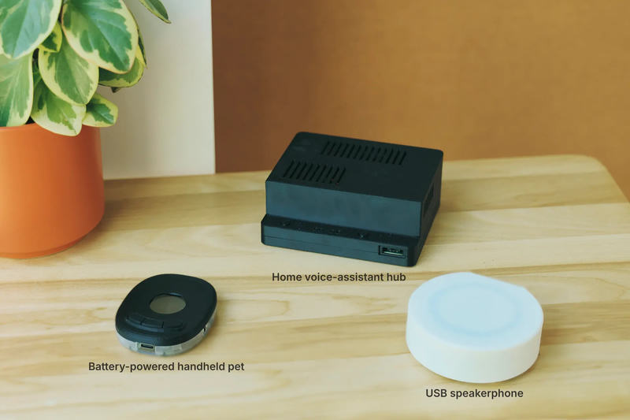
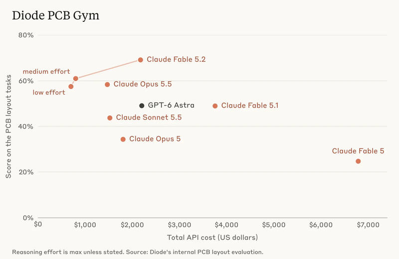
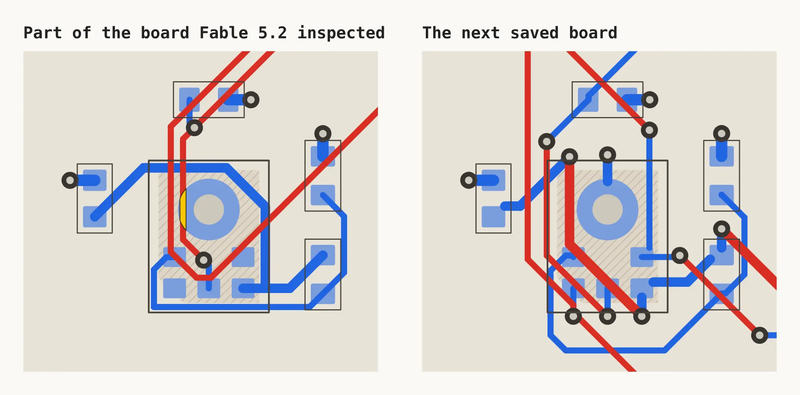

Feature 17 · ARTICLE · 2026 11
Claude can design electronic prototypes from start to finish
A little over a year ago, the models we tested couldn’t reliably lay out a circuit board. Now Claude can design and prototype electronic hardware from start to finish. Working with Diode Computers, a company with which Anthropic has a commercial relationship, we asked Claude Fable 5.2 to design a speakerphone, a voice-assistant hub, and a handheld virtual pet. With minimal prompting, it wrote the specifications, drew the schematics, placed and routed the boards, designed the enclosures, wrote the firmware, and prepared the parts lists. Diode’s engineers built the prototypes under its direction, and they worked without any fixes to their circuitry. All three still work after weeks of use, but they are early prototypes: we don’t yet know how they’ll hold up or whether they would pass commercial certifications.

Geometry

The largest change from earlier models was in geometric reasoning. Earlier models placed supporting parts too far from their chips or oriented connectors incorrectly. Fable 5.2 produced more compact, practical layouts and routed the most important connections first: high-speed signals, high currents, noise-sensitive lines. On the hub, it routed the USB and Ethernet pairs one at a time, keeping each pair equal in length and correctly spaced.
On PCB Gym, Diode’s internal benchmark for placing and routing boards whose layouts have been removed, Fable 5.2 scored 69%, against 25% for Fable 5. On BenchCAD 2.1, a public benchmark for rebuilding parts, assemblies, and boards from drawings and images, it scored 83.5%, nearly double Claude Fable 5.1.
Revision

Earlier models rarely revised their own work, even when their placements made routing impossible. Over the past year, Diode designed many boards with them that were 95% complete but still unusable.
Claude changed course without being prompted. On the speakerphone, it reassigned signals to different chip pins so the tracks under the touch controls could stay on one layer without crossing. On the hub, it noted the connections were “getting too tangled to trace visually,” decided to “rip these traces and start fresh,” and rerouted dozens of times until an arrangement worked.
Tools and documentation
Claude read datasheets when a decision depended on a part. Asked whether the pet would run without a battery, one of the few times Diode prompted it with a question, it read the charger’s datasheet, said it would run on USB power, and predicted the charging light would flicker.
KiCad’s built-in router drew one track at a time, and the hub had long tracks from a 100-pin connector. Claude judged that this would take too much step-by-step guidance and wrote its own grid-search router in about half an hour. It laid each long track in roughly a second.
Constraints
Claude tracked how one decision affected others. Its collision checks found that the speakerphone’s board couldn’t drop straight into the enclosure, because the mute switch would hit the back wall; tilted about 25 degrees, it would fit, and Claude added that step to the assembly instructions. For the hub, it calculated that a 25 mm microphone port would resonate near 3.4 kHz, “right in the voice band,” and switched to a wedge-shaped enclosure that shortened the ports to about 10 mm, raising the resonance to about 8.9 kHz.
It also ran the factory’s checks itself. It fixed six solder-mask slivers too thin to manufacture, and it correctly ignored a flag on a deliberate connection between two grounds. Diode manufactured all three boards directly from Claude’s files without the rounds of adjustment that factories and engineers often go through.
Limits
The devices haven’t been through electrical validation, antenna tuning, thermal testing, or certification, and weren’t designed for mass production. Claude wasn’t connected to test equipment or manufacturing machines, so Diode’s engineers built and tested the prototypes. Other models are making progress too; OpenAI recently wrote about designing a handheld device with its models. Next, we plan to see whether Claude can design denser, faster, more complex boards, check them in simulation, and learn from measurements of the finished devices.